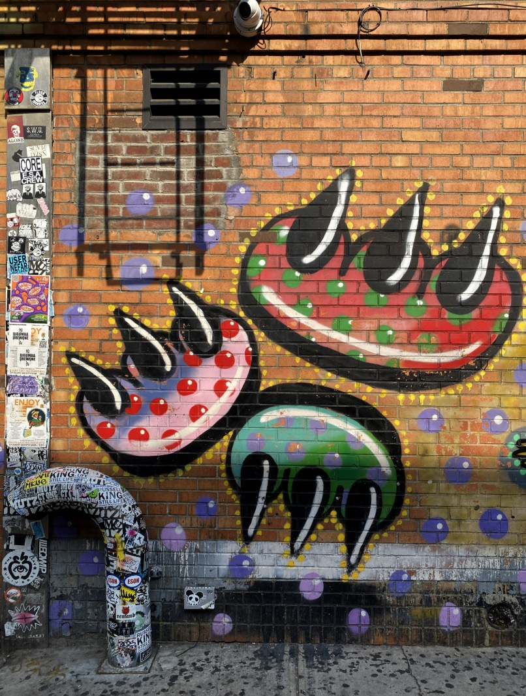

ARTIST 01
CLAW MONEY
Claw Money is Claudia Gold, a graffiti artist from Queens who began marking New York in the late 1980s and early 1990s. Her symbol, a paw with three claws, grew out of the "W" in her tag CLAW. It was simple and fast, and impossible to miss. As one of very few women in the scene, she took on everyone, and her claw became part of the city's memory. In 2002 it moved from walls to clothing, when she launched her own brand.